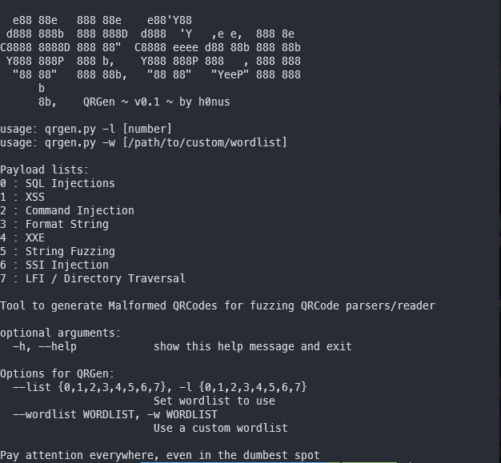
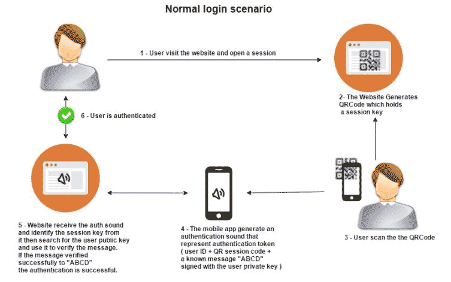
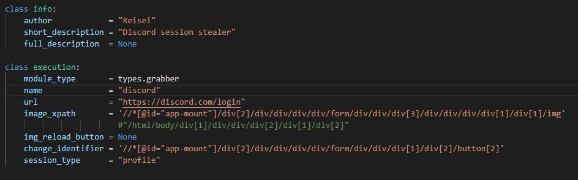
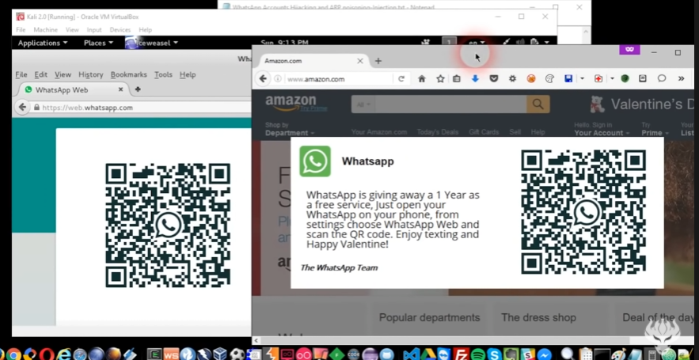

Qr коды есть везде и в них можно загрузить все, любой текст. В этом и есть минус qr кодов, так как человек не может понять, что там написано до момента сканирования его и кто знает, что может там находиться. В него можно запихнуть вирус или замаскированный вредоносный сайт. Пример этому- полезная нагрузка.
Полезная нагрузка- в мире вредоносных программ этот термин используется для описания действий на компьютере жертвы, которые должны выполнять вирусы, черви или трояны. Например, полезная нагрузка вредоносных программ подразумевает порчу данных, кражу конфиденциальной информации, повреждение компьютерных систем.
QRGen- он кодирует полезную нагрузку в qr код используя python, если кто-то такой код просканирует, то вряд ли его устройству это понравиться.
Необходимо установить все зависимости и запустить скрипт
pip3 install -r requirements.txt
python3 qrgen.py
Далее видим справку
Аргумент -h выведет то же самое, а вот запуск с ключом -l приведет к генерации QR-кодов из определенной категории. Всего их восемь.
Первый класс атак — SQL-инъекции — используют при взломе БД и нарушении работы веб-сайтов. Например, запрос может вызывать зависание сайта.
SQL – инъекции — это один из очень распространённых способов взлома сайтов и веб-приложений,работающих с реляционными базами данных.
Этот способ основан на внедрении в выполняемый приложением запрос к базе данных произвольного SQL-кода,переданного злоумышленником.SQL-инъекции являются одной из разновидностей атак типа «инъекция кода».
SQL-инъекции, в зависимости от типа уязвимости, может дать возможность атакующему выполнить произвольный запрос к базе данных. То есть атакующий сможет прочитать содержимое любых таблиц, удалить, изменить или добавить данные, а также есть вероятность получения возможности работы с локальными файлами и выполнения произвольных команд на атакуемом сервере.
Последствия SQL – инъекций:
Второй класс атак — демонстрирует эксплуатацию XSS-уязвимости при атаке на веб-приложения с использованием SVG (Scalable Vector Graphic).
XSS уязвимость- Ее суть довольно проста, злоумышленнику удается внедрить на страницу JavaScript-код, который не был предусмотрен разработчиками. Этот код будет выполняться каждый раз, когда жертвы (обычные пользователи) будут заходить на страницу приложения, куда этот код был добавлен.
Применение XSS уязвимости:
SVG — это Scalable Vector Graphics, язык разметки масштабируемой векторной графики, он входит в подмножество расширяемого языка разметки XML и предназначен для описания двумерной векторной и смешанной векторно-растровой графики в формате XML. То есть мы имеем возможность описать в XML то, что должно быть на рисунке, а также добавить динамику.
SVG поддерживает:
В некоторых браузерах можно подгружать ресурсы и со сторонних хостов.Хоть SVG и картинка, но из нее можно без проблем запускать код на JavaScript. Таким образом, если есть какой-то сайт, куда можно загружать картинки в SVG, то можно попытаться получить на этом сайте хранимую XSS'ку. Для этого нужно знать еще несколько тонкостей, связанных с тем, как браузер открывает SVG.
Есть несколько вариантов вставить SVG:
Если мы загрузим на сервер-жертву файл SVG, то, возможно, он отобразится, но в нем не будет работать JavaScript — как раз из-за того, что он подгружается с помощью тега <img>. Но мы спокойно можем воспользоваться вторым или третьим методом и использовать прямую ссылку на наш SVG на атакуемом сервере.
Третий класс атак — выводит на экран жертвы содержимое файла /etc/passwd: список аккаунтов Linux-based-систем и дополнительную информацию о них (раньше — хеши паролей этих учетных записей). В подобных случаях обычно стараются получить /etc/shadow и конфигурацию сервера, но все очень сильно зависит от цели
/etc/shadow — это текстовый файл, содержащий информацию о паролях пользователей системы. Он принадлежит пользователю root и теневой группе и имеет 640 разрешений.
Четвертый класс атак — представляет собой выражение, которое вызовет переполнение буфера (buffer overflow). Оно возникает, когда объем данных для записи или чтения больше, чем вмещает буфер, и способно вызвать аварийное завершение или зависание программы, ведущее к отказу в обслуживании (denial of service, DoS). Отдельные виды переполнений дают злоумышленнику возможность загрузить и выполнить произвольный машинный код от имени программы и с правами учетной записи, от которой она выполняется, что делает эту ошибку довольно опасной.
Пятый класс атак — (XXE Injections) представляет собой вариант получения скрытой информации веб-сервера с помощью анализа вывода XML-файлов. Конкретно в нашем примере при запросе к серверу тот ответит зашифрованным в Base64 содержимым файла /etc/passwd, который уже упоминался.
Однако расшифровать его не составит труда — достаточно лишь воспользоваться встроенной в большинство дистрибутивов Linux утилитой base64 либо же онлайн-конвертером.
Шестой класс атак — это класс уязвимостей, который включает в себя предоставление «специфичных для языка маркеров формата» для выполнения произвольного кода или сбоя программы.
Говоря человеческим языком, это класс атак, при которых приложение некорректно очищает пользовательский ввод от управляющих конструкций, из-за чего эти конструкции в результате исполняются.
Седьмой класс атак — представляет собой вариант command injection, которая выполняет определенный код на стороне сервера.
Внедрение команд ОС (иногда пишут «инъекция команд ОС», «инжект команд ОС») – это одна из разновидностей внедрения кода.
Её особенностью является выполнение несанкционированных команд операционной системы на удалённом сервере через уязвимое веб-приложение.
Используя эту уязвимость, атакующий может получить чувствительные данные:
А также полностью скомпрометировать веб-сервер со всеми исходящими из этого последствиями.
Восьмой класс атак — это LFI-уязвимости (Local File Inclusion; включение локальных файлов), позволяющие просмотреть на уязвимых (или неправильно настроенных) серверах файлы и папки, которые не должны были быть видны всем. Один из возможных вариантов — просмотреть файл /etc/passwd.
Это может выглядеть вот так:
Также можно создать свою полезную нагрузку и интегрировать ее.
SQRL — открытый проект для безопасного входа на веб-сайт и аутентификации. При входе, естественно, используется QR-код, который обеспечивает проверку подлинности
Мы инициализируем сессию и клонируем код QR-логина на нашу фишинговую страницу. Затем пользователь переходит на нашу страницу и сканирует QR-код. В нашей сессии мы получаем подтверждение от сервиса и после можем использоваться аккаунтом пользователя.
Для этого потребуется:
Распаковываем geckodriver и выполняем команды:
chmod +x geckodriver
sudo mv -f geckodriver /usr/local/share/geckodriver
sudo ln -s /usr/local/share/geckodriver /usr/local/bin/geckodriver
sudo ln -s /usr/local/share/geckodriver /usr/bin/geckodriver
Клонируем репозиторий и переходим в папку с содержимым. Устанавливаем python зависимости
image_xpath - XPATH путь до самого QR кода
img_reload_button - XPATH для кнопки рефреша QR кода
change_identifier - XPATH до элемента, который изменится после успешной авторизации
Вид фишинговой страницы
После скана QR кода мы получим Firefox profile, где в папке storage можем найти токен дискорда пользователя
Qr код можно интегрировать в какой либо веб плагин
“Если хотите получать бонусы, то отсканируйте данный код на своем телефоне”
Ну а на деле, если вы отсканируете данный код, то у злоумышленника появиться доступ к вашей странице whatsapp.